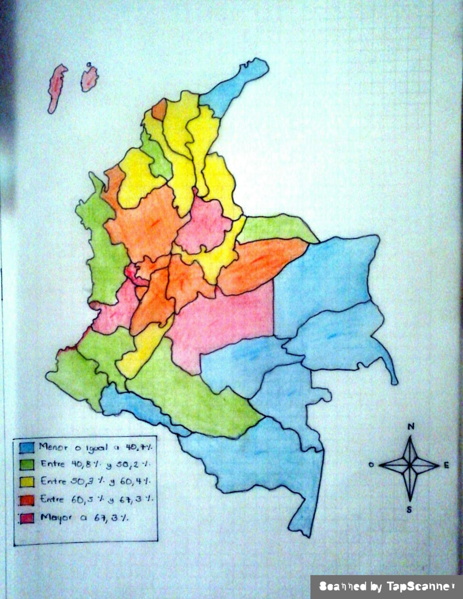

En el siguiente mapa se encuentran divididos los departamentos del país, con diferentes colores, estos colores hacen referencia al porcentaje de acceso de las viviendas u hogares de TIC en estos departamentos, esta encuesta fue hecha por el dane en el 2018 a más de 89.522 hogares, estas encuestas fueron validas solo para personas de mayor a 5 años de edad en cada hogar.
Las tecnologías de la información y la comunicación (TIC) son todas aquellas herramientas y programas que tratan, administran, transmiten y comparten la información mediante soportes tecnológicos. La informática, Internet y las telecomunicaciones son las TIC más extendidas, aunque su crecimiento y evolución están haciendo que cada vez surjan cada vez más modelos.
Los resultados que se presentan a continuación corresponden a la información básica sobre tenencia y uso de TIC recopilada a través de la Encuesta nacional de Calidad de Vida (ECV) período 2018. Las preguntas sobre TIC se formulan acerca de la tenencia de diferentes bienes y servicios TIC a nivel del hogar, y acerca de las actividades, frecuencias y lugares de uso de Internet, a nivel de individuos de 5 y más años de edad dentro del hogar.
El tamaño de muestra de la ECV 2018 de la cual se extrae la información para estos indicadores, fue de 89.522 hogares con encuestas completas, cantidad superior frente a los años anteriores . Ese tamaño de muestra permite la desagregación de resultados para el total nacional, los treinta y tres departamentos del país, y, dentro de cada uno de esos dominios, la desagregación por áreas (cabecera y centros poblados-rural disperso). Se exceptúa San Andrés, para las que sólo se tiene desagregación para las cabeceras.
Dane - 2018
Primero cabe recalcar que alrededor de nuestro país, ninguna región tiene un porcentaje mayor al 80% de artículos TIC en sus hogares, esto hace una clara referencia a la pobreza en la que se encuentra el país.
En la Región caribe encontramos que hay una variación de porcentajes según el departamento, pero toda esta región abarca entre el 40,8% y el 60,4% de porcentaje de tener dispositivos TIC en sus hogares, Después de todo no es la zona más pobre del país pero aun así se nota bastante escasez de dispositivos Tic en esta zona del País.
En la Región Andina encontramos la mayor concentración de este tipo de dispositivos, no solo por el hecho de que dentro de la misma se encuentre la capital, sino porque también es la zona con menores índices de pobreza en el país. Esta región abarca del 60,5% a más del 67,3% de dispositivos TIC en los hogares.
En la Región del pacifico encontramos un gran índice de pobreza que se ve reflejado en los porcentajes ya que todos los departamentos a excepción de uno tiene un porcentaje de - 40,7% de dispositivos TIC, la única región con un porcentaje diferente es el valle del cauca, en donde se encuentra una de las ciudades más turísticas y hermosas del país como lo es Cali. Su porcentaje es de más de 67,3% .
En la Región Orinoquia vemos un porcentaje que realmente en la mayoría de la región es bastante medio, va del 50,3% a incluso más del 67,3%. Pero algunas zonas de esta por debajo del 40,7% de porcentaje de estos dispositivos, haciendo de nuevo referencia a la gran pobreza del país.
Por ultimo encontramos a la Región Amazonas en donde se ve el porcentaje más bajo de recursos tecnológicos, ya que este mismo abarca del 50,3% a menos del 40,7 en casi toda la región, cabe recalcar que estos departamentos no tienen la misma población que la capital del país o que los lugares más turísticos, pero aun así las personas que habitan en estas regiones también deberían tener un porcentaje de acceso más alto del 50,3% .